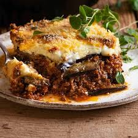

Home
Moussaka Recipe

Description
Moussaka is an aubergine and potato-based dish which is common in the eastern Mediterranean area.
In Greece, it is layered and served hot.
This is a simple recipe that makes a tasty dinner treat.
Ingredients
- 6 tbsp olive oil
- 3 medium aubergines
- 800g lamb mince
- 1 onion
- ...
Steps
- Heat a frying pan over a high heat
- Drizzle 4 tbsp of the oil over the slices of aubergine and fry them for 5-7 minutes
- Heat 1 tbsp of oil in a large flameproof casserole dish over a medium heat
- ...